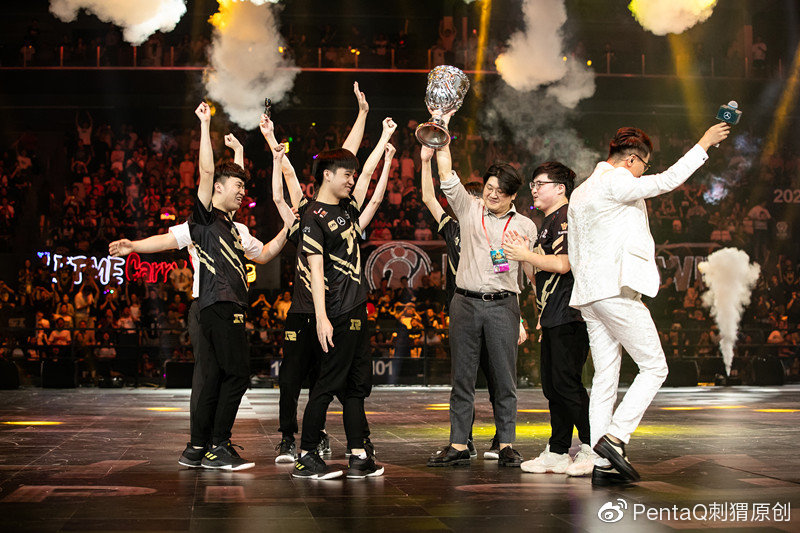

文：丹尼二狗
图：一村、PentaQ、LOL esports
站在世界赛脚下，选手们和我们的区别是，我们眺望，他们攀登。
攀登的过程之中，难免想起过去一路走来的曲折，刻骨铭心的失败，击破强敌的喜悦，还有奖杯对于自己的真正意义。除了至高的荣耀外，这意义，相信对于每一个选手来说都不尽相同。
S9的舞台在逐渐亮起灯来。在此之前，我们从参加全球总决赛的24支队伍，160多名选手之中选出9位，回溯他们的职业生涯，以及他们和世界赛的故事。他们中有的第一次站上这个舞台，有的则一次又一次地跌倒重来。他们的故事不能够代表所有人，而更像是一种缩影。
Nine of us。出现在这个系列第一篇的，是来自LPL赛区二号种子RNG战队的中单选手，Xiaohu。
2015年年底，在中国西北部城市银川举办了一届名为WCA的电竞赛事，该赛事横跨WAR3、DOTA2等多个项目，《英雄联盟》也是其中之一。由于该项目参赛队伍全部来自国内，不少玩家调侃，“明明叫做全球总决赛，却没有一支海外队伍。”
彼时，随着中国《英雄联盟》在2013、2014年两次错失世界冠军，加上2015年大幅度引入韩援，LPL联赛本身的热度和体量正在迅速升高，非官方的杯赛逐渐成为玩家和观众们没有联赛看时的消遣。现在回看，RNG在2015年年底通过战胜EPA而拿到的那座WCA冠军奖杯，似乎没有太高的含金量。
但对于这支队伍来说，它更像是一种象征和暗示，它的背后，是在经历一个赛季的风雨飘摇之后的沉淀和积累。
当然也有新生力量的加入。Looper和Mata，两位初到LPL但却颇为不顺的韩援在年底选择转会，来到未知的队伍寻求机会。“其实并没有要再拿一次世界赛冠军的愿望，但是想拿一次LPL联赛的冠军。”来到新队的前世界冠军Mata，带来的是极致的游戏理解以及王者的霸气。
“以前打训练赛就像做任务一样，打了就打了，每天都那样一遍。Mata来了之后，打完训练赛会一起看录像，看有哪些失误，哪些不对的地方，学到的东西就比较多。”说这话的人是李元浩，一个在2015年默默无闻的中单选手。从GT到RNG，他在自己登场LPL的第一年度过了两个惨淡的赛季，没有赢得荣誉和掌声。
唯一有的，只有那个同样快被遗忘的WCA冠军，那是李元浩和RNG在2015年的第一座奖杯，发生在这一年的最后一个月份里。
可能连他自己也没想到，接下来，这支队伍会发生怎样的变化。
RNG拿下了2016年LPL春季赛的冠军，经历过的人会知道这个冠军的意义所在。统治赛区的EDG并没有因为这一场比赛的失利而落寞，但3:1的比分无疑象征着一个可以与王朝分庭抗礼者的出现。
关于那一场比赛的回忆有很多。雨中的上海旗忠网球中心，主持人段暄，Looper团战晕三个的艾克，连续使用四把男枪的厂长，“已经开始研究MSI对手”的经典垃圾话，以及获胜之后怒吼的麻辣香锅。
当然，还有四场决赛使用四个不同英雄的Xiaohu。阿兹尔、韦鲁斯、丽桑卓、乐芙兰，2016年春天的李元浩可以是稳健的后期霸主，凶狠的单杀王，也可以是果断的开团保障。“春之虎帝”的招牌被安在了他的头上，一年前默默无闻的Xiaohu，在一年之后成为赛区中最炽手可热的中单。
这也是RNG重组之后获得的第一个LPL联赛冠军，属于他们的时代正在缓缓升起。同时，Xiaohu和Mlxg，两个非“皇族”血统的本土新人铸就了这支队伍最早的特色，凶狠激进，灵巧多变。
因为那一次春季赛冠军，Xiaohu和整个RNG之后的故事像是突然坐上了高速列车。获得在上海举办的2016MSI季中冠军赛的参赛资格，夏季赛迎来Uzi的回归，以及在赛季结束之后以二号种子的身份晋级全球总决赛。
不过，在那个夏天里，Xiaohu从“春之虎帝”变成了“夏之虎哀帝”，到了全球总决赛，他更被调侃为“世界赛最菜中单”。状态的下滑加上Uzi回归之后“每个人都能Carry”所导致的资源分配问题，2016年夏天的李元浩，经历了自己登上巅峰之后的第一次回落。
“我现在是队伍中的短板，是‘背锅位’。”那时的赛后采访，他常有这样的无奈。
“一直在坚持吧。我觉得作为职业选手，只要在不断进步，就是优秀的。”2017年年底，在年度颁奖盛典上捧起年度MVP的Xiaohu这么说。接着，他似乎想说“能承受得起多大的挫折，就能获得多大的成就”，但却很不好意思的忘了词。
“年度MVP”，这是一份颁给全年LPL中综合表现最为出色和优异的选手的荣誉。那一年的候选人共有五名——Uzi、Meiko、Mystic、Condi和Xiaohu。不论是个人还是队伍，他们中的每一个都在这一年里取得了斐然的成绩。
开玩笑的说，Xiaohu能够获得这样的荣誉，有一部分要归功于解说米勒。夏季季后赛半决赛中，RNG和WE的第五场决胜局，最后关头Xiaohu使用飞机拿下四杀，成功为队伍锁定胜局，米勒喊出了LPL史上最经典的解说词之一——“谁敢横刀立马，唯我虎大将军”。而Xiaohu的飞机和吸血鬼，也成为了他新风格的象征：发育、后期、团队保障、关键先生。
在渡过2016年下半年的磨合期之后，实力依旧顶尖的Uzi成为毫无疑问的队伍核心，整个RNG的战术也不可避免地向下倾斜。2017年，这支队伍重组全华班，Letme和Ming的加入为RNG补充了新鲜血液，也给了这支队伍全新的面貌。
在主教练Firefox的带领下，全华班RNG在2017年全球总决赛赛场上打出了对LPL观众来说，也许是全年最难忘的一场BO5比赛。上海主场，四强到决赛，面对的是极具统治力的SKT。
这一场比赛背后，隐藏着一条长达五年的时间线。2013，老皇族在全球总决赛中被SKT 3:0 带走，换回一片骂声。2016，新RNG在全球总决赛上被SKT 3:1 击败，拿下一个小分。而在一年之后，RNG在上海再次面对SKT，最终双方战至 2:2 平，最后一局被SKT碾压。心碎失利的背后，是这支队伍再一次地缩短和宿敌之间的差距。
对于许多观众来说，和SKT的BO5是令人心碎的，而对于RNG亦或是LPL来说，心碎结果的另一边，是我们终于具备了能够把顶级队伍拖入悬崖边的实力，我们和对方的差距第一次被缩小到紧张激动的决胜局里。
那一场BO5，是RNG在2017年的最后一步，也是2018年重新爆发的第一步。全球总决赛结束几个月之后，Xiaohu捧起了“年度MVP”的奖杯。
那是他第二次从全球总决赛舞台上回来，在他的职业生涯中，时间才走过一半多一些。
所有人都觉得Xiaohu在变的越来越成熟，他自己却觉得还不够，还有更多的成长空间。2018年世界赛期间，他说“自己就是俱乐部的下限”；2018年结束之后，他说“只有实力真正变得更强，那个时候回来的信心才是更加真实的。”面对媒体，他常常说出这样的话。
他已经不再是那个拿出妖姬和辛德拉，疯狂线上单杀的虎帝了——更多的情况下，他是开团的冰女，保护队友的加里奥，后期爆发的飞机和吸血鬼。在越来越多强力新中单的光环下，Xiaohu似乎没有已经没有那么耀眼。2017年之后，数据向的奖项和头衔越来越少，正如同从“虎帝”到“虎哀帝”的转变一样，他又经历了从“虎大将军”到“虎大捞逼”的转变。
但在关键时刻，Xiaohu依旧是那个Xiaohu。无论是2018年MSI上决定胜局的马尔扎哈大招，还是洲际赛最后一局和姿态换线后在上路对Kiin的压制，亦或是一年之后，2019年夏天末尾拿出吸血鬼重新找到Carry感觉，在职业赛场上摸爬滚打了五年的他，依旧不错过任何一个帮助队伍赢下比赛的机会，哪怕面对的是真正的绝境。2018年全球总决赛八强，和G2战至2:2平之后，第五局的Xiaohu拿出了瑞兹——一个同样曾属于他的招牌Carry型中单。
如果说2016到2017是Xiaohu逐渐成名并达到顶峰的两年，那么2018和2019就是他在喧闹之后重新归于沉寂的两年，这两年里关于他的新闻和声音越来越少，他的存在没人否定，但也没有过多赞扬——哪怕是在拿下各种荣誉的2018。

2019更是如此。人们关注这支队伍里相继退役选手们以及他们的继任，关注Uzi能否延续上一年的鼎盛状态，关注队伍整体在重创之后的调整和恢复。这一年，Xiaohu依旧陪伴队伍走完全程，发挥依旧趋于稳定，少有亮眼和“杀疯了”的表现和操作，只可惜这一年，值得人们关注的选手还有更多。
中单Xiaohu的脸，开始慢慢隐藏于RNG的队服后面。
Uzi是皇族的魂么？当然。
那么Xiaohu呢？或许是RNG这三个字母最初的样子。
Letme、Mlxg、Xiaohu、Wuxx、LeY，从2015年夏天到现在，他的位置从没动过，一晃已经五年。对于新人，我们总是要求转变，而对于老将，我们总是祈祷坚持。
五年过去，Xiaohu即将第四次登上全球总决赛的舞台。第一次差距明显，第二次功亏一篑，第三次盛极而衰，并不是那种特别圆满的故事类型。最有希望的一年没有夺冠，和SKT的比分还定格在 2:3。
但我们依旧记住Xiaohu这个ID在过去每一次世界赛赛场上为观众留下的回忆。同时，也期待这份回忆在今年十月份的欧洲，能够被他和他的队伍延续下去。